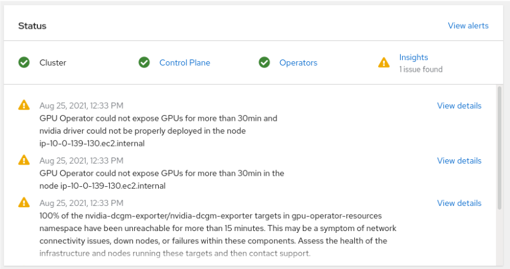
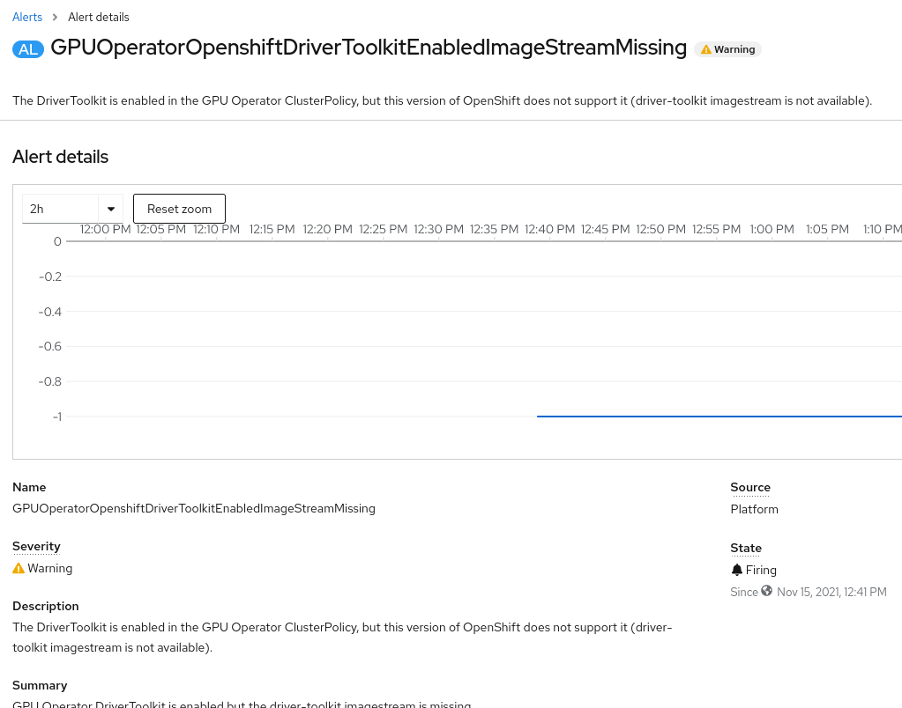

Troubleshooting
This section includes errors that users may encounter when performing various checks during installing the NVIDIA GPU Operator on the OpenShift Container Platform cluster.
Node Feature Discovery checks
Verify the Node Feature Discovery has been created:
$ oc get NodeFeatureDiscovery -n openshift-nfdNAME AGE nfd-instance 4h11m
Note
If empty the Node Feature Discovery Custom Resource (CR) must be created.
Ensure there are nodes with GPU. In this example the check is performed for the NVIDIA GPU which uses the PCI ID 10de.
$ oc get nodes -l feature.node.kubernetes.io/pci-10de.presentNAME STATUS ROLES AGE VERSION ip-10-0-133-209.ec2.internal Ready worker 4h13m v1.21.1+9807387
GPU Operator checks
Verify the Custom Resource Definition (CRD) is deployed.
$ oc get crd/clusterpolicies.nvidia.comNAME CREATED AT clusterpolicies.nvidia.com 2021-09-02T10:33:50Z
Note
If missing, the cluster policy install was unsuccessful.
Verify the cluster policy is deployed:
$ oc get clusterpolicyNAME AGE gpu-cluster-policy 8m25s
Note
If missing, create the custom resource (CR). Refer to Create the ClusterPolicy instance for more information.
Verify that the Operator is running:
$ oc get pods -n nvidia-gpu-operator -lapp=gpu-operator
NAME READY STATUS RESTART AGE gpu-operator-6b8b8c5fd9-zcs9r 1/1 Running 0 3h55m
Note
If ImagePullBackOff is reported, maybe the NVIDIA registry is down. If CrashLoopBackOff is reported review the operator logs.
$ oc logs -f -n nvidia-gpu-operator -lapp=gpu-operator
2021-11-17T12:08:33.913Z INFO controllers.ClusterPolicy Found Resource, updating... {"ClusterRoleBinding": "nvidia-mig-manager", "Namespace": "nvidia-gpu-operator"} 2021-11-17T12:08:33.941Z INFO controllers.ClusterPolicy Found Resource, updating... {"ConfigMap": "default-mig-parted-config", "Namespace": "nvidia-gpu-operator"} 2021-11-17T12:08:33.958Z INFO controllers.ClusterPolicy Found Resource, updating... {"ConfigMap": "default-gpu-clients", "Namespace": "nvidia-gpu-operator"} 2021-11-17T12:08:33.964Z INFO controllers.ClusterPolicy Found Resource, updating... {"SecurityContextConstraints": "nvidia-mig-manager", "Namespace": "default"} 2021-11-17T12:08:33.992Z INFO controllers.ClusterPolicy DaemonSet identical, skipping update {"DaemonSet": "nvidia-mig-manager", "Namespace": "nvidia-gpu-operator", "name": "nvidia-mig-manager"} 2021-11-17T12:08:33.992Z INFO controllers.ClusterPolicy DEBUG: DaemonSet {"LabelSelector": "app=nvidia-mig-manager"} 2021-11-17T12:08:33.992Z INFO controllers.ClusterPolicy DEBUG: DaemonSet {"NumberOfDaemonSets": 1} 2021-11-17T12:08:33.992Z INFO controllers.ClusterPolicy DEBUG: DaemonSet {"NumberUnavailable": 0} 2021-11-17T12:08:33.992Z INFO controllers.ClusterPolicy INFO: ClusterPolicy step completed {"state:": "state-mig-manager", "status": "ready"} 2021-11-17T12:08:34.061Z INFO controllers.ClusterPolicy ClusterPolicy is ready.
Validate the GPU stack
The GPU Operator validates the stack using the nvidia-device-plugin-validator and the nvidia-cuda-validator pod. If they report the status Completed, the stack works as expected.
$ oc get po -n nvidia-gpu-operatorNAME READY STATUS RESTARTS AGE bb0dd90f1b757a8c7b338785a4a65140732d30447093bc2c4f6ae8e75844gfv 0/1 Completed 0 125m gpu-feature-discovery-hlpgs 1/1 Running 0 122m gpu-operator-8dc8d6648-jzhnr 1/1 Running 0 125m nvidia-container-toolkit-daemonset-z2wh7 1/1 Running 0 122m nvidia-cuda-validator-8fx22 0/1 Completed 0 117m nvidia-dcgm-exporter-ds9xd 1/1 Running 0 122m nvidia-dcgm-k7tz6 1/1 Running 0 122m nvidia-device-plugin-daemonset-nqxmc 1/1 Running 0 122m nvidia-device-plugin-validator-87zdl 0/1 Completed 0 117m nvidia-driver-daemonset-48.84.202110270303-0-9df9j 2/2 Running 0 122m nvidia-node-status-exporter-7bhdk 1/1 Running 0 122m nvidia-operator-validator-kjznr 1/1 Running 0 122m
Verify the cuda validator logs:
$ oc logs -f nvidia-cuda-validator-8fx22 -n nvidia-gpu-operatorcuda workload validation is successfulVerify the nvidia-device-plugin-validator logs:
$ oc logs nvidia-device-plugin-validator-87zdl -n nvidia-gpu-operatordevice-plugin workload validation is successful
Verify the NVIDIA driver deployment
This is an illustrated example of a situation where the deployment of the Operator is not proceeding as expected.
List the pods deployed to the nvidia-gpu-operator namespace:
$ oc get pods -n nvidia-gpu-operatorNAME READY STATUS RESTARTS AGE gpu-feature-discovery-hlpgs 0/1 Init:0/1 0 53m gpu-operator-8dc8d6648-jzhnr 0/1 Init:0/1 0 53m nvidia-container-toolkit-daemonset-z2wh7 0/1 Init:0/1 0 53m nvidia-cuda-validator-8fx22 0/1 Init:0/1 0 53m nvidia-dcgm-exporter-ds9xd 0/1 Init:0/2 0 53m nvidia-dcgm-k7tz6 0/1 Init:0/1 0 53m nvidia-device-plugin-daemonset-nqxmc 0/1 Init:0/1 0 53m nvidia-device-plugin-validator-87zd 0/1 Init:0/1 0 53m nvidia-driver-daemonset-48.84.202110270303-0-9df9j 0/1 CrashLoopBackOff 13 53m nvidia-node-status-exporter-7bhdk 1/1 Init: 0/1 0 53m nvidia-operator-validator-kjznr 0/1 Init:0/4 0 53m
The Init status indicates the driver pod is not ready. In this example the driver Pod is in state CrashLoopBackOff. This combined with the RESTARTS equal to 13 indicates a problem.
Verify the main console page:
The first alert shows that the “nvidia driver could not be properly deployed”.
Examine the NVIDIA driver main container logs:
$ oc logs -f nvidia-driver-daemonset-48.84.202110270303-0-9df9j -n nvidia-gpu-operator -c nvidia-driver-ctrIn the logs this line indicates an entitlement issue:
FATAL: failed to install elfutils packages. RHEL entitlement may be improperly deployedThis message maybe associated with the unsuccessful deployment of the driver toolkit. To confirm the driver toolkit is successfully deployed follow the guidance in Verify the OpenShift Driver Toolkit. If you see this message a workaround is to edit the created
gpu-cluster-policyYAML file in the OpenShift Container Platform console and setuse_ocp_driver_toolkittofalse.Set up the entitlement. Refer to Enabling a Cluster-wide entitlement for more information.
Verify the OpenShift Driver Toolkit
Verify the OpenShift Driver Toolkit is successfully deployed.
Examine the logs to ensure the driver toolkit is successfully deployed:
oc logs $(oc get pods -l app=gpu-operator -oname -n nvidia-gpu-operator) -n nvidia-gpu-operatorThe following output indicates an issue with
dependencies missing.2021-11-15T11:43:51.626Z INFO controllers.ClusterPolicy ocpHasDriverToolkitImageStream: driver-toolkit imagestream not found {"Name": "driver-toolkit", "Namespace": "openshift"} 2021-11-15T11:43:51.626Z INFO controllers.ClusterPolicy WARNING OpenShift Driver Toolkit requested {"hasCompatibleNFD": true, "hasDriverToolkitImageStream": false} 2021-11-15T11:43:51.626Z INFO controllers.ClusterPolicy WARNING OpenShift Driver Toolkit {"enabled": false} ... 2021-11-15T11:43:52.048Z INFO controllers.ClusterPolicy WARNING: OpenShift DriverToolkit was requested but could not be enabled (dependencies missing)
Examining Alerts on the OpenShift Container Platform web console reveals the following for GPUOperatorOpenshiftDriverToolkitEnabledImageStreamMissing. This screenshot provides additional evidence that the Openshift version needs upgraded.
The log entry and information from the alert indicates this version of OpenShift does not support a successful deployment of the OpenShift Driver Toolkit. For more details about the dependencies between the OpenShift Container Platform version and the OpenShift Driver Toolkit, refer to Installation and Upgrade Overview.